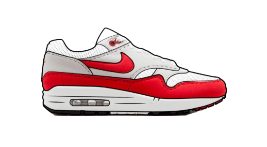
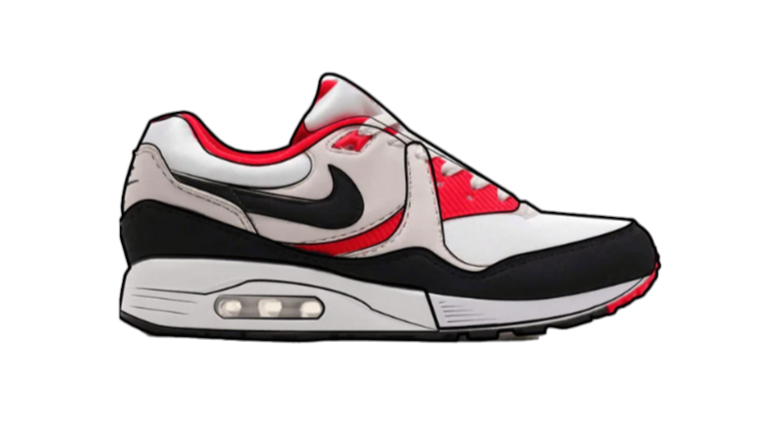
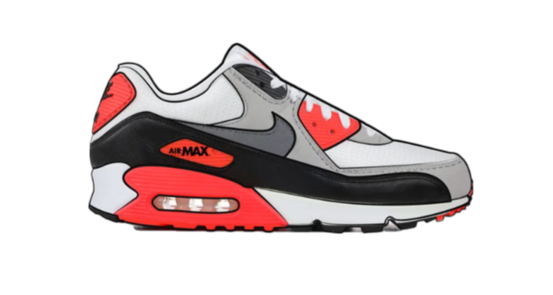
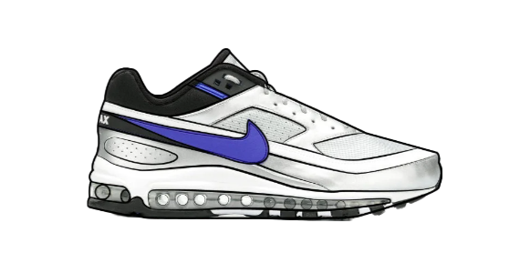
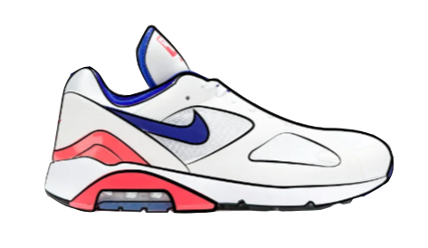
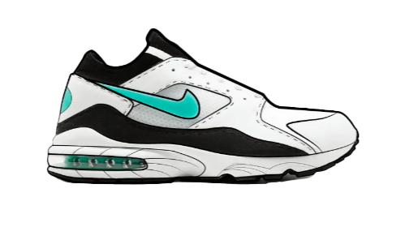

1978
Air technology is used in a sneaker for the first time
“Nike Air technology consists of pressurised air inside a tough yet flexible bag and provides more flexibility and spring without compromising structure. The Air-Sole units maintain their given form with elasticity, lower impact and keep the shoe snug and lightweight.” - Nike

In 1978, Nike debuted the Air Tailwind — the first sneaker to feature air cushioning technology. The revolutionary idea of adding air to a sneaker came from former NASA engineer Frank Rudy. One small idea from Rudy, one giant leap for Nike.
The Air Tailwind sneaker was first released in extremely limited quantities for the 1978 Honolulu Marathon before releasing to the public a year later. We imagine that was a very long, painful year for first-generation hypebeasts.
1987
Nike Air Max 1
Designed by Tinker Hatfield, the Nike Air Max 1 was the first sneaker to offer a window to the sole.
The out-of-the-box thinker was inspired by the Centre Georges Pompidou in Paris to design the sneaker that made its Air technology visible.

Hallo Hallo
1989
Nike Air Max Light
Cutting Season. Like the Air Max 1 but (unsurprisingly) less weighty, Nike tweaked its successful silhouette with EVA foam for a brand-new feel.

Hallo Hallo
1990
Nike Air Max 90
Originally dubbed the Air Max 3, The Nike Air Max 90 completely reworked the Air Max sneaker for the new decade. Still today, the Air Max 90 is one of the most popular sneakers in the world.

Hallo Hallo
1991
Nike Air Classic BW
One incredibly important element to the greatness of Air Max is the fact that there are so many OG colourways that are now iconic, such as the Persian Violet OG iteration of the Nike Air Max BW. - Zack
The Nike Air Classic BW was originally a sleeker version of the Air Max 90 with a bigger Air window (yes, the BW really does stand for ‘Big Window’). Most recently, the Nike Air Max BW has been updated with a full-length Air sole borrowed from the Air Max 97. First seen on a SKAir model by Skepta; we think the changes majorly upgrade the sneaker.

Hallo Hallo
1992
Nike Air Max 180
Time to get playful. The first Nike sneaker to display Air technology on its outsole, the Nike Air Max 180 (180-degree views of visible air) was in many ways a departure from the tried-and-tested formula of the early Air Maxs.

Hallo Hallo
1993
Nike Air Max 93
Created using a blow-moulding technique, the Air Max 93 (the original Air Max 270) took the design of the Air Max 180 and gave us coloured Air units (yess), a sock-like fit (yessss) and more air for our money (yassssss).

Hallo Hallo
1994
1994, Nike Air Max 94
Entering more unfamiliar territory on our journey through Air Max history, the 1994 Air Max (predictably labelled the Air Max 94) is frequently overlooked or unknown by even the most avid sneaker collectors. So, what is it? It’s essentially a hybrid of the Nike Air Max Light and The Nike Air Max 93. And if you’re asking us, we think that makes it pretty damn cool.

Hallo Hallo
1994
1994, Nike Air Max 2
“My absolute favourite Air Max model is one that has still never had a re-release, the Air Max 2 from 1994. This was one of the last Air Maxs that Tinker Hatfield designed, and it introduced multiple Air chambers with different pressures for strategic cushioning and support (later found in the Air Max 95). The upper, speckled mudguard and different-coloured Air units in the heel all come together to make one incredible design.” - Zack

Hallo Hallo
1994
1994, Nike Air Max 2 Light
Déjà vu. Just as they did with the original Air Max, Nike created a lighter version of the Air Max 2. However, unlike the 1s, the Air Max 2 Light proved more popular than its predecessor.

Hallo Hallo
1995
1995, Nike Air Max 95
A sneaker of subtle branding and striking form; the Sergio Lozano designed Air Max 95 was created with the human anatomy in mind (a fun fact which seems simultaneously cool and slightly gross). It’s important to note that the Air Max 95 marks an important milestone in the Nike Air Max timeline as the complete overhaul in design signifies the brand’s confidence in its relationship with their consumer. In short: by ‘95, they had us.

Hallo Hallo
1996
1996, Nike Air Max 96
An original ‘chunky sneaker’; the Nike Air Max 96 has a lot in common with today’s most sought-after silhouettes. In fact, with its minimal branding, layered upper and bulky sole being so en-vogue, we’re anticipating a re-release in the near future.

Hallo Hallo
1997
1997, Nike Air Max 97
Finally, full-length Air cushioning. The Air Max 97 — designed by Christian Tressler and inspired by waterdrops making ripples in a pond — is the darling of the sneakerhead community. And while the OG colourway is often dubbed the ‘Silver Bullet’, the hue was in fact inspired by the silver sheen of mountain bikes. (We feel like our whole life has been a lie.)

Hallo Hallo
1998
1998, Nike Air Max 98
If any Air Max encapsulates 90s fashion, it’s the Air Max 98. Mismatched design and bold, contrasting colours make the 1998 kicks one of the most eye-catching Nike releases ever.

Hallo Hallo
1998
1998, Nike AirMax Plus
lorida: the location where Sean McDowell first envisioned a sneaker that drew inspiration from the beach. Palm trees swaying, colours of the sunset and sealife are all translated through design upon the Air Max Plus (better known as the Nike TN). It’s ironic then that the sneaker proved most popular in gloomy London. Why? Perhaps the vibrant sneaker was a form of escapism.

Hallo Hallo
2003
Nike Air Max 2003
The first significant release of the 00s acted as a breath of fresh air after the chaotic aesthetics of the late 90s. Monochromatic, clean and well-formed; the Nike Air Max 2003 (thought-up by Sergio Lozano of Air Max 95 fame) made promises of a sleeker feature.

Hallo Hallo
2006
Nike Air Max 360
A performance-focused silhouette, the Nike Air Max 360 is built upon an Air unit that is visible from every angle (something you probably guessed from its name). It reflects a time in which a sneaker’s ability to be used in sports was regarded as highly important.

Hallo Hallo
2017
Nike Vapormax Flyknit
Return of the Max. That refined future Nike hinted at with the Air Max 2003 finally came 14 years later when the Flyknit Vapormax released. And oh boy, it was worth the wait. A Kathy Gomez design, the Vapormax is the first time the Air Unit stands alone as the sneaker’s sole. Combined with a flyknit upper, the feel and fit of the Vapormax is like no other.

Hallo Hallo
2018
Nike Air Max 270
In 2018, Nike looked back to their early 90s designs to inspire forward-thinking ideas — ideas to follow ever-growing interests in lifestyle sneakers. The result: a retrofuturistic sneaker that sparked interest with the brand-new Gen Z consumers.

Hallo Hallo
2019
2019 Nike Air Max 720
The sequel to the 270, the Air Max 720’s space-age look and bulky Air unit (the tallest airbag of the Air Max timeline) come together to create one of the most exciting sneakers of the 21st Century.

Hallo Hallo